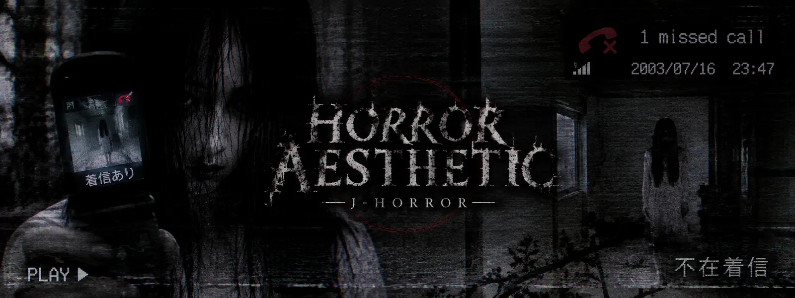
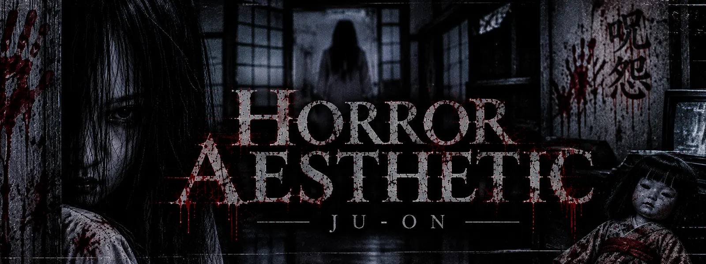
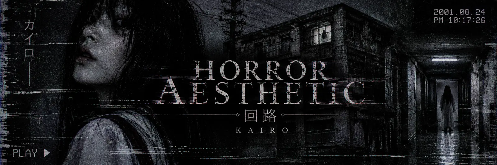

Japan / Cinema / Ghost stories
J-Horror
Японский хоррор — это не только призраки. Это медленный страх, пустые пространства, городские легенды и ощущение, что нечто чужое уже находится рядом.

Essential film / 1998
Ringu
Проклятие, передающееся через изображение

Haunted house
Ju-On
Дом, из которого не возвращаются

Digital ghost
Kairo
Одиночество как форма вторжения
Further into the darkness
Пути J-Horror
Found footage & cursesNoroi · OccultBody & identityTomie · MutationFolk nightmaresOnibaba · KaidanVengeful spiritsSadako · Kayako
Внутри раздела собраны фильмы, авторы, темы и культурные корни японского ужаса. Архив будет расширяться.